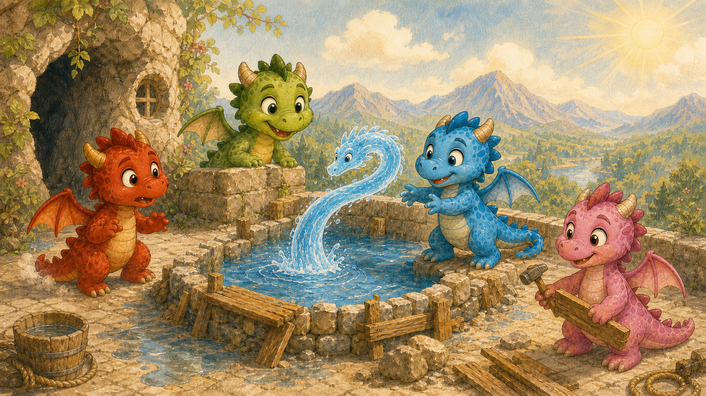

Rozprávka 1
Ako si dráčiky postavili bazénik

Ako si dráčiky postavili bazénik
V krajine, kde sa piesok lial a voda sypala, stálo uprostred lesa vysoké, špicaté bralo. Nebolo to obyčajné bralo. Obyčajné bralá totiž len tak stoja, tvária sa kamenne a čakajú, kým ich niekto namaľuje na pohľadnicu. Toto bralo malo pod vrcholom jaskyňu.
A v tej jaskyni bývala mama dračica so štyrmi malými dráčikmi.
Mama dračica práve spala na veľkej kope zlata, drahých kameňov a na jednom veľmi starom striebornom pohári, ktorý už dávno nikto nepoužíval, ale bol lesklý, čiže dôležitý. Draky totiž majú rady lesklé veci ešte oveľa viac ako deti čokoládu.
Pred jaskyňou bola kamenná terasa. Na terase stál kamenný stôl, kamenné lavice a úplne nové ihrisko, ktoré si dráčiky nedávno postavili s mestským tesárom. Malo húpačku nad priepasťou, preliezky, kolotoč rýchly ako delová guľa a malý hrad na rytierske zápasy.
Bolo to krásne ihrisko.
Lenže v ten deň bolo také teplo, že aj kamene vyzerali, akoby rozmýšľali, či sa neroztopia.
Slnko svietilo na horu už od rána. Svietilo na terasu, na lavice, na preliezky, na kolotoč, na hrad, na jaskyňu a trochu aj na mamu dračicu, ktorá sa vo sne zamračila a prikryla si nos zlatou korunou.
„Fúúú,“ povedal Mokroš.
Mokroš bol modrý dráčik. Miloval vodu. Rád plával, potápal sa, čľapkal, špliechal, máčal si chvost a nechával si masírovať chrbátik pod vodopádom. Keby mohol, spal by vo vedre. Vo veľkom vedre, samozrejme, lebo dráčik predsa len nie je sardinka.
„Ja sa topím,“ povedal Mokroš a ľahol si na kamennú lavicu.
„Netopíš,“ povedal Uhlík. „Topenie je, keď je niečo vo vode. Ty si na suchu.“
„Práve preto sa topím,“ vzdychol Mokroš. „Suchom.“
Uhlík, červený dráčik, sedel na slnku a tváril sa spokojne. Uhlík mal rád teplo. Veľmi rád. Tak rád, že by si najradšej ušil prikrývku z horiacich šišiek, keby mu to mama dovolila. Nedovolila mu to, lebo prikrývka z horiacich šišiek sa veľmi zle perie.
„Mne je príjemne,“ povedal Uhlík.
„Tebe je príjemne aj vtedy, keď už ostatným horia chlpy na zadku,“ odsekla Poletucha.
Poletucha bola zelená dračica. Vedela výborne lietať, robiť piruety a pozerať na svet z výšky, kde je všetko menšie - problémy a aj dospelí, čo hovoria veci príliš vážne.
Práve krúžila nad terasou a mávala krídlami tak rýchlo, že Mokroš na chvíľu dúfal, že z nej bude vietor.
„Nižšie!“ zavolal. „Rob prievan!“
„Ja nie som veterný mlyn,“ povedala Poletucha, ale aj tak zletela nižšie a párkrát prudko zamávala krídlami.
Spievanka, ružová dračica, sedela pri hrade na rytierske zápasy a pokúšala sa z troch paličiek, jedného kameňa a štyroch klincov zostrojiť tienidlo.
„Hotovo!“ vyhlásila.
Tieniaci vynález sa okamžite zrútil.
„To bola skúšobná verzia,“ dodala rýchlo. „Vynález musí najprv spadnúť, aby človek vedel, kde je chyba.“
„Drak,“ opravil ju Uhlík.
„Človek, drak, trpaslík - to je predsa jedno,“ povedala Spievanka.
Vtom sa z jaskyne ozvalo hlboké: „Chrrrrrmmm.“
Mama dračica otvorila jedno oko. To bolo u nej vážne znamenie. Keď otvorila obe oči, znamenalo to buď nebezpečenstvo, alebo že niekto siaha na poklad. A keď sa postavila, bolo rozumné tváriť sa, že ste nikdy nič neurobili, hoci ste ešte ani robiť nezačali.
„Čo sa deje?“ spýtala sa chrapľavým dračím hlasom.
„Je tepló,“ povedal Mokroš tak tragicky, akoby mu niekto oznámil, že všetky rieky sveta premenovali na Suché potoky.
Mama dračica pozrela na slnko, potom na Mokroša a potom na Uhlíka, ktorý sa spokojne ohrieval ako čerstvo upečený rožok.
„Áno,“ povedala. „Je leto.“
A znovu zavrela oko.
„Mama!“ zvolal Mokroš. „My potrebujeme vodu.“
„V jaskyni je džbán,“ zamrmlala mama dračica.
„To nie je voda. To je urážka vody v keramickej nádobe.“
Mama dračica otvorila oko ešte raz. „Tak choďte k rieke.“
„Ale rieka je dolu,“ povedal Mokroš.
„To tak býva,“ povedala mama. „Rieky to robia, netečú po vrcholoch hôr len preto, aby to mali deti pohodlné.“
„A čo keby sme si urobili bazénik tu?“ navrhla Spievanka.
Všetci sa pozreli na ňu.
Spievanka sa rozžiarila. „Na terase! Vedľa ihriska! Taký krásny. Kamenný. S okrajom. A s malým schodíkom. A s miestom na čľapkanie. A s tajným tunelom pre mokré dobrodružstvá.“
„Bez tajného tunela,“ ozval sa z jaskyne mamin hlas.
„S úplne obyčajným tunelom?“ skúsila Spievanka.
„Bez tunela.“
Mokroš vyskočil. „Bazénik! To je najlepší nápad od čias, keď niekto zistil, že voda sa dá piť - a zároveň sa v nej dá ležať.“
Uhlík naklonil hlavu. „A ako ho naplníme?“
Všetci stíchli.
Terasa bola vysoko. Rieka tiekla hlboko dolu v údolí, kde sa ligotala medzi stromami ako modrá stužka. Pekná, čistá, studená modrá stužka. Ale poriadne ďaleko.
„Budeme nosiť vodu vo vedrách,“ povedala Poletucha.
Mokroš na ňu pozrel tak, ako sa dieťa pozerá na dospelého, ktorý povie: „Upraceme si celú izbu, bude to zábava!“
„Vo vedrách?“ zopakoval.
„Áno.“
„Z rieky?“
„Áno.“
„Hore na horu?“
„Áno.“
„Koľkokrát?“
Poletucha sa zamyslela. Bola veľmi múdra, ale niektoré otázky boli také nepríjemné, že by ich najradšej poslala k úradníkovi, nech ich opečiatkuje a stratí.
„Veľakrát?,“ povedala napokon.
Mokroš si ľahol späť na lavicu. „Zbohom. Bol som mladý, modrý a smädný.“
Uhlík vyskočil. „Ja to vypálim do skaly! Urobím jamu!“
„Ty keď vypáliš jamu,“ povedala Poletucha, „tak bude mať dno niekde pri trpaslíkoch.“
„Trpaslíci by mali výhľad,“ povedal Uhlík.
„Trpaslíci majú bane,“ pripomenula Spievanka. „Výhľad do diery už poznajú.“
A tak si sadli na okraj terasy, labky im viseli nad zrázom a pozerali dolu na rieku. Mokroš občas natiahol krk, ako keby ju chcel vypiť na diaľku.
„Veď ty vieš čarovať s vodou,“ povedala zrazu Spievanka.
„Viem,“ povedal Mokroš. „Ale vodu neviem vyčarovať len tak, z ničoho. To vraj vedia len dospelé draky.“ Ja ju viem len posúvať, točiť, zdvíhať, špliechať, vlniť, robiť z nej bubliny, stĺpiky a raz som spravil rybe fúzy.“
„Rybe?“ spýtal sa Uhlík.
„Áno.“
„A čo povedala?“
„Nič. Bola to ryba. Ale vyzerala oveľa dôležitejšie.“
Poletucha sa vzniesla do vzduchu. „Tak ju neposúvaj po vedrách. Posúvaj ju po ceste.“
„Po akej ceste?“
Spievanka zatlieskala. „Po vodnej! Urobíme žľab!“
„Z čoho?“ spýtal sa Mokroš.
„Zo skaly,“ povedala Spievanka. „Uhlík nahreje kamen, ty ho ochladíš, skala pukne, ja ju opracujem a Poletucha bude lietať hore-dolu a hovoriť, či to tečie správne.“
Poletucha pristála a hrdo zdvihla hlavu. „Budeme robiť stavbu.“
„Budovateľskú,“ dodal Uhlík.
„Vodnú,“ povedal Mokroš.
„A spevavú,“ povedala Spievanka a hneď si začala pospevovať:
„Kameň sem a kameň tam,
bazénik si spravím sám,
keď sa voda hore valí,
nenosíme ťažké džbány.“
„To sa skoro rýmuje,“ povedal Uhlík.
„Skoro je pri stavbe veľmi dôležité,“ povedala Spievanka. „Najprv je skoro, potom je hotovo.“
A pustili sa do práce.
Najprv museli vybrať miesto. Mokroš chcel bazénik presne tam, kde bol najväčší tieň. Uhlík chcel presne tam, kde bolo najviac slnka. Poletucha chcela, aby neprekážal pri pristávaní. Spievanka chcela, aby mal okraj na sedenie, kameň na skákanie, maličký ostrovček a miesto, kde by si mohla raz postaviť plávajúce divadlo.
Po krátkej porade, ktorá trvala dlho, vybrali miesto vedľa ihriska, kúsok od kamenného stola. Mama dračica z jaskyne povedala: „Nie príliš blízko k pokladu!“
To bola dračia verzia slova prosím.
Uhlík sa nadýchol a začal opatrne nahrievať skalu. Nie príliš silno, lebo keď Uhlík robil niečo „trochu“, väčšinou z toho bolo „utekajte!“.
Skala sa rozpálila.
„Teraz ja!“ zvolal Mokroš.
Roztiahol krídelká a spustil sa plachtením dolu k rieke. Neletel ako Poletucha. Poletucha vedela lietať poriadne, s otočkami, pádmi a výstupmi, pri ktorých sa aj oblaky pýtali, či je všetko v poriadku. Mokroš vedel plachtiť. To znamená, že sa spustil dolu tak, aby nepadol ako kameň, ale zároveň aby nebudil falošný dojem, že je z neho vzdušný akrobat.
Pri rieke nabral okolo seba veľkú guľu vody a pomocou mágie ju vytiahol hore k terase. Voda sa mu vznášala nad chrbtom ako obrovská priesvitná bublina. Bola krásna, modrá a Mokroš sa na ňu pozeral tak nežne, ako sa iní pozerajú na koláče.
„Nepusť ju na mňa,“ povedal Uhlík.
„Prečo?“
„Lebo syčím.“
Mokroš sa uškrnul. „To by bolo zábavne mokré.“
„Mokroš.“
„Dobre, dobre.“
Pustil vodu na rozpálenú skalu. Ozvalo sa hlasné blblanie a PŠŠŠŠŠŠŠT, ako keď varíš vodu na čaj. Puk! Puk! Skala popraskala.
Spievanka pribehla s nástrojmi. Mala kladivko, dláto, povrázok, tri klinčeky, jednu lyžicu, ktorú si požičala z kuchyne bez toho, aby sa spýtala a drevenú paličku, ktorá vyzerala, že netuší, čo robí medzi ostatným náradím.
„Ideme!“ zvolala.
Klopkala, tesala, merala, pospevovala si, raz trafila kameň, raz seba po pazúre a raz Uhlíka po chvoste.
„Au!“
„To bolo meranie,“ povedala Spievanka.
„Čoho?“
„Tvojej trpezlivosti.“
Poletucha zatiaľ lietala medzi terasou a riekou. Pozerala, kadiaľ by sa dala voda viesť. Pod horou našla prirodzenú skalnú ryhu, ktorá sa vinula smerom dolu. Bola síce krivá, hrboľatá a na jednom mieste viedla cez krík, ktorý sa tváril vysušene, ale na začiatok to stačilo.
„Tadiaľ!“ volala zhora. „Len tam treba kúsok prehĺbiť! A tamto vyrovnať! A tamten balvan posunúť!“
„Ktorý balvan?“ kričal Uhlík.
„Ten veľký!“
„Všetky sú veľké!“
„Ten, čo vyzerá ako pupkatý zmrzlinár, keď mu niekto zje poslednú pistáciovú!“
„Aha!“
Balvan posunuli spolu. Uhlík ho nahrial, Mokroš ochladil, Spievanka podložila páku a Poletucha zhora radila. Pákou sa v tých časoch hovorilo dlhej palici, ktorou sa dalo pohnúť niečím ťažkým. Zvyčajne hneď potom, čo niekto povedal: „To určite nepôjde.“
Išlo to.
Balvan sa pohol, zakýval a odgúľal sa bokom.
Potom sa však začal gúľať rýchlejšie.
„Echm?!,“ povedala Poletucha.
Balvan sa rútil dolu svahom, preskočil kameň, preletel cez suchý pník a zastavil sa až v húštine pri rieke. Z húštiny vyletelo niekoľko vtákov a jeden veľmi prekvapený zajac, ktorý mal v tvári výraz: „Ja sa odtiaľto asi sťahujem.“
„To bolo plánované,“ povedala Spievanka.
„Čo presne?“ spýtal sa Uhlík.
„Že sa balvan už nebude motať v ceste.“
Práca pokračovala. Dráčiky prehlbovali skalnú ryhu, aby voda mohla tiecť z rieky hore na terasu.
Lenže voda netečie hore.
Voda, ako každý vie, tečie dolu. Ak netečie dolu, tak buď zamrzla, alebo ju niekto drží, alebo je v rozprávke a čaká, čo s ňou urobia dráčiky.
Mokroš stál pri rieke, zavrel oči a natiahol predné labky. Voda sa zavlnila. Najprv trochu. Potom viac. Potom sa z nej zdvihol tenký pramienok, akoby rieka vyplazila jazyk.
„Poď,“ šepol Mokroš.
Pramienok sa zdvihol vyššie. Zhrubol, zatočil sa a na konci sa z neho vytvarovala hlava hada. Mala vodné oči, vodný ňufák a vodné ústa, ktoré sa síce neotvárali, ale aj tak vyzerali, že by vedeli povedať: „Sssssom pripravený.“
„Poď, pekne,“ povedal Mokroš.
Vodný had sa obzrel na rieku, potom na Mokroša a potom smerom k hore. Vyzeral, akoby si nebol celkom istý, či je dobrý nápad plaziť sa hore kopcom, ale keďže bol z vody a nie z názorov, poslúchol.
Začal sa kĺzať po skalnej ryhe hore svahom.
„Ono to idé!“ vykríkla Poletucha.
„Samozrejme, že to ide,“ povedal Mokroš a tváril sa, že vôbec nie je prekvapený.
Vodný had stúpal. Kúsok po kúsku. Jeho hlava sa niesla vpredu, telo sa vlnilo za ňou a chvost sa ešte stále kúpal v rieke. Mokroš ho ťahal mágiou, Poletucha kontrolovala cestu, Spievanka opravovala miesta, kde voda vytekala bokom, a Uhlík sušil kamene tam, kde bolo príliš klzko.
„Pozor!“ zvolala Poletucha.
Na jednom mieste vodný had vystrčil hlavu z ryhy a zamieril rovno k Uhlíkovi.
„Mokroš!“
Mokroš trhol labkami. Had sa stočil, ale neskoro. Vodná hlava šplechla Uhlíkovi cez nos.
Ozvalo sa tiché syčanie.
„Niečo som ti hovoril,“ povedal Uhlík a nadýchol sa.
Mokroš sa snažil nesmiať. Veľmi sa snažil. Tak veľmi, že mu z nosa vyšla bublina.
Uhlík sa nadýchol znova.
„Nie!“ zakričali Poletucha a Spievanka naraz.
Uhlík zadržal kýchnutie. Oči sa mu vypúlili. Líca sa mu nafúkli. Chvost sa mu napol. Vyzeral ako červená čajová kanvica pred výbuchom.
„Kýchni DOHORA!“ zvolala Spievanka.
Uhlík zdvihol hlavu.
„HaPČÍÍÍ!“
Ohnivá guľa vyletela do vzduchu a rozprskla sa vysoko nad terasou na drobné iskry. Vyzeralo to ako ohňostroj. Len menší. A trochu nelegálny, keby v tom kráľovstve existovali predpisy o ohňostrojoch. Našťastie neexistovali, lebo kráľ mal dosť práce s kravou, ktorá minulý týždeň zjedla pol stánku so zeleninou a tvárila sa, že iba náhodou stojí uprostred dôkazov.
„Pekné,“ povedala Poletucha.
„Nechcel som,“ zamrmlal Uhlík.
„Práve preto pekné.“
Konečne vodný had dorazil až na terasu. Vystrčil hlavu ponad okraj nového bazénika, akoby sa chcel pozrieť, či je to tam dosť pekné, a potom sa celý prelial dnu.
Bazénik sa začal plniť.
Mokroš stál pri okraji, labky vystreté, jazyk od sústredenia trochu vonku.
„Ešté,“ šepkal. „Ešte troškú. Eštéé…“
Bazénik sa napĺňal. Najprv po členky. Potom po brucho malého dráčika. Potom akurát tak, aby sa v ňom dalo čľapkať, šmýkať, potápať si hlavu a tváriť sa, že ste morský had. Alebo drak. Podľa toho, čo práve ste.
„Stačí!“ zvolala Poletucha.
Mokroš spustil labky. Vodný had sa poslušne zmenšil, sklonil hlavu, akoby sa uklonil, a jeho zvyšok sa rozlial do bazénika. Posledná kvapka dopadla na hladinu tak ticho, že ju počuli iba tí, čo mali uši úplne blízko. Čiže nikto.
Všetci štyria stáli okolo bazénika.
Bol krásny.
Nebolo to veľké jazero ani kráľovské kúpele. Kráľovské kúpele sú miestom, kde sa ľudia umývajú veľmi vážne, aby bolo vidieť, že sú dôležití. Toto bol malý dračí bazénik na terase. Mal kamenný okraj, schodík, hladké dno a na jednej strane výklenok, o ktorom Spievanka tvrdila, že je to „technická polička“, hoci každý vedel, že to tam raz vyloží hračkami.
Mokroš doň skočil prvý.
ŠPĽACH!
Voda vyletela na všetky strany.
Uhlík uskočil.
Poletucha sa zasmiala.
Spievanka začala tancovať okolo bazénika a spievať:
„Neniesli sme vedierka,
neboleli chrbátiky,
voda prišla ako had,
dobre sa nám bude spať.“
„To posledné je konečne pravda,“ ozval sa z jaskyne mamin hlas.
Mokroš sa vynoril z vody a vyfúkol fontánku. „Toto je najlepší deň môjho života.“
„To hovoríš vždy, keď si mokrý,“ povedala Poletucha.
„Áno. A vždy je to pravda.“
Uhlík opatrne podišiel k okraju. Voda bola studená. Veľmi studená. Podľa Uhlíka až drzá.
„Ja tam nejdem,“ povedal.
„Nemusíš,“ povedal Mokroš. „Môžeš sedieť na okraji a zohrievať nám kamene.“
Uhlík sa zamyslel. To neznelo zle. Sadol si na okraj, nahrial jeden plochý kameň a Mokroš si naň položil mokrý chrbátik.
„Mmm,“ povedal Mokroš. „Vyhrievaný bazénik...“
„Neprežeň to,“ upozornila Poletucha. „Nech z toho nie je polievka.“
Spievanka už medzitým skúšala, či sa dá z okraja bazénika skočiť otočkou. Dalo sa. Potom skúšala, či sa dá skočiť otočkou a pritom spievať. Tiež sa dalo. Potom skúšala, či sa dá skočiť otočkou, spievať a držať v labke lyžicu.
To už išlo horšie.
Lyžica odletela oblúkom a pristála pri vchode do jaskyne.
Mama dračica otvorila oko.
„Spievanka.“
„Áno, maminka?“
„To je moja polievková lyžica?“
Spievanka sa pozrela na lyžicu, potom na bazénik, potom na súrodencov.
„Neviém,“ povedala.
Lyžica sa ešte trochu kývala.
Mama dračica zdvihla obočie.
„Teda áno,“ opravila sa Spievanka. „Ale použila som ju na vedecké účely.“
Mama dračica si povzdychla. Potom sa pozrela na bazénik. Na Mokroša, ktorý v ňom blažene plával. Na Uhlíka, ktorý sa tváril, že vôbec nemá radosť, hoci mal. Na Poletuchu, ktorá už rozmýšľala, z akej výšky by sa dalo skočiť do vody bez toho, aby sa mama pozrela oboma očami. A na Spievanku, ktorá stála v mláke vedľa lyžice a snažila sa vyzerať nevinne.
„Pekná práca,“ povedala mama dračica.
Dráčiky stíchli.
Pochvala od mamy dračice bola vzácna. Nie preto, že by ich nemala rada - mala ich rada veľmi. Ale mama dračica šetrila slovami podobne ako pokladom. Keď niečo povedala, bolo to skoro také lesklé ako zlato.
„Naozaj?“ spýtal sa Mokroš.
„Naozaj,“ povedala mama. „Použili ste silu hlavou. To je vždy lepšie, ako používať hlavu silou.“
Dráčiky nad tým chvíľu rozmýšľali.
„To znamená, že sme sa nenarobili?“ spýtal sa Uhlík.
Mama dračica zívla. Zívanie dospelého draka je udalosť, pri ktorej sa menšie oblaky rozhodnú radšej odísť inde.
„Nie,“ povedala. „Narobili ste sa. Len nie hlúpo.“
A to bola pravda.
Mohli nosiť vodu vo vedrách až do večera. Mohli sa hádať, potiť, šmýkať a vyliať polovicu vody cestou. Namiesto toho premýšľali. Uhlík pracoval so skalou, Mokroš s vodou, Spievanka s nástrojmi a Poletucha so vzduchom a výhľadom.
Mágia totiž nie je na to, aby človek nemusel robiť nič. Ani drak. Mágia je na to, aby sa dobrý nápad dostal ďalej než obyčajné labky.
A tiež na to, aby mal Mokroš bazénik.
Večer sedeli všetci štyria pri vode. Slnko zapadalo za les a bazénik sa ligotal. Poletucha si namáčala konček chvosta vo vode a čítala knižku, ktorú si požičala z mestskej knižnice. Uhlík ohrieval jeden kameň, Mokroš na ňom spokojne ležal do polovice ponorený vo vode a Spievanka stavala z paličiek malý mostík.
„Čo to bude, keď to bude?“ spýtal sa Uhlík.
„Skokanský mostík,“ povedala Spievanka.
Poletucha zdvihla hlavu.
Mama dračica otvorila jedno oko.
Spievanka sa usmiala. „Malý.“
„Veľmi malý,“ povedala mama.
„Úplne maličký,“ prikývla Spievanka.
Na chvíľu bolo ticho.
Potom Mokroš vyfúkol z vody bublinu v tvare bubliny.
„Zajtra by sme mohli urobiť šmykľavku,“ povedal.
Mama dračica zavrela oko.
„Zajtra,“ zamrmlala, „budem radšej spať trocha tuhšie.“